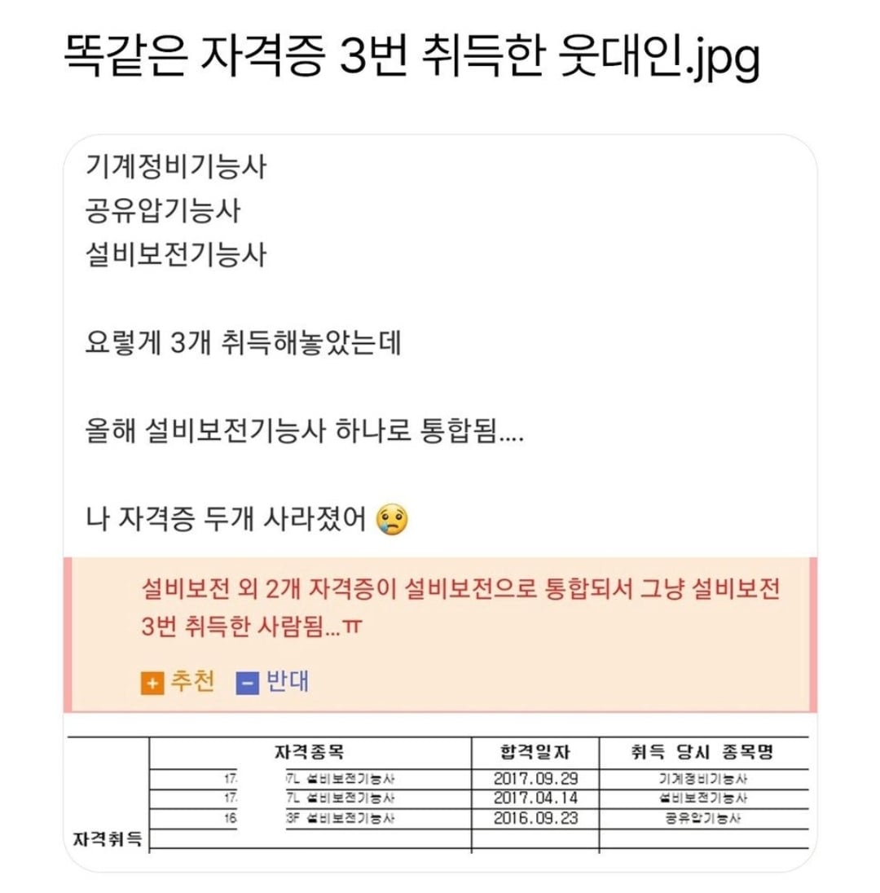

자격증 강화 실패

자격증 강화 실패
황금 기능사를 얻으실 수 있겠군요
설설설비비비보보보전전전기능사
전~장(하스스톤으로)
설비보전기능사+3강임 암튼 강화임
솔직히 시험 응시비용은 환불해줘야지
설비보전기능십이
사실 셋다 그닥 크게 안중요한 자격증이긴해
ㅋㅋㅋ 그래도 이력서 넣을때 한개랑 세개는 다를거 같음
전기면 전기 기계면 기계관련 따는게 맞는데 저것들은 사실 그렇게 쳐주는 자격증은 아니긴함 ㅠ
기능사 10개 넣어도 기사 1개를 더 쳐줌
기능사는 개나 소나 다 따지만 기사는 개랑 소 둘중에 하나만 따기 때문
본문의 자격증은 보통 대기업 생산직, 설비직을 가기위해 많이들 취득하는 자격증이고 나름 높게 쳐주는 자격증이고 대기업 현장직은 기사1개보다 기능사10개를 더 쳐줌. 대부분 고졸 전문대졸인데 아 얘가 기능사10개를 취득하는 머리, 노력, 근성을 쳐주는거지. 기사자격증은 법정필수 선임은 대졸이나 교육만 받으면 다 해결되는거라 이게 큼
저거 할바에 공조냉동땄어야
저런거 100개있어도 별로 안중요하긴함ㅋㅋㅋ
2성으로 합쳐졌네
설설보비보비기능사
ㅋㅋㅋㅋㅋㅋㅋㅋㅋㅋㅋㅋㅋㅋ
+2라도 붙여줘라 안됐다....
궁극의히드라 완성

운전면허증은 면허 딸때 마다 문구가 하나씩 늘어나는데 4개인가 5개까지 본듯
설비보전 좋아 청년
쎨삐뾰쪈끼능쌰
ㅅ발아ㅋㅋㅋㅋㅋㅋㅋㄱ
삼위일체네
저정도면 산업기사로 바꿔줘라 ㅋㅋㅋㅋㅋ
설비보전기사랑 기능사 둘다있는데
5년전인가 두개 난이도가 거의 비슷했던게 함정 개쉬움
개편되고 ㅈㄴ 힘들어졌다는 소문만들은.
원래 모든 자격증 시험이 옛날이 더 쉬웠음
황금자격증을 얻으실수 있겠군요~
슬프다
+3 강화성공